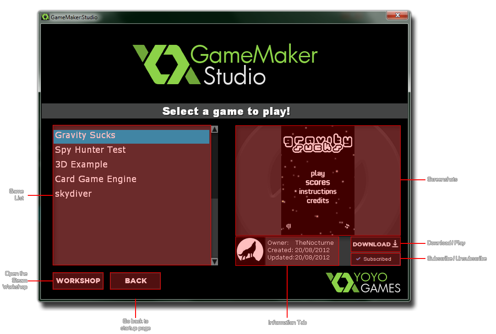

If your copy of GameMaker: Studio has been bought through
Steam, you will see that when you start GameMaker:
Studio you are presented with a splash screen containing two
buttons - Play and Make. Pressing the Make
button will open the standard GameMaker: Studio User Interface
where you can begin to create your own games, but pressing the
Play button will open the Steam Player: 
This player will be empty to start with as you must first visit the
Steam
Workshop and subscribe to the games that you wish to
play. Once this has been done, they will be visible in the Player
(you may need to close and restart the Player for these changes to
be visible) listed on the left hand side and selecting any one of
them will show a screenshot, user information and also permit you
to download them by clicking on the "Download" button. Once they
have been downloaded, this button turns into a "Play" button and
clicking it again will start the game. Beneath the Download/Play button is the
Subscribed button. This can be used to unsubscribe
the selected game from the player simply by clicking on it, which
will turn the button into a green Subscribe button.
You may click this
again to re-subscribe to the game, but bear in mind that this
option is only available until you close the player. Once closed
all unsubscribed games will be removed from the playlist and to
re-subscribe you must search for them on the Workshop pages.
Finally, on the left of the player is the "Workshop" button
and the "Back" button. The "Workshop" button will
open up the Steam Workshop for you in your default browser, while
the "Back" button will take you back to the main start-up
screen where you can choose to start GameMaker: Studio,
or restart the player again (this button is only available when the
player has been launched from the splash screen and not from
GameMaker: Studio).